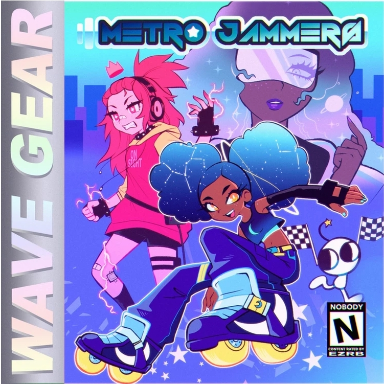
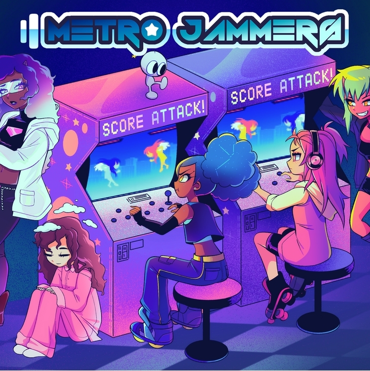
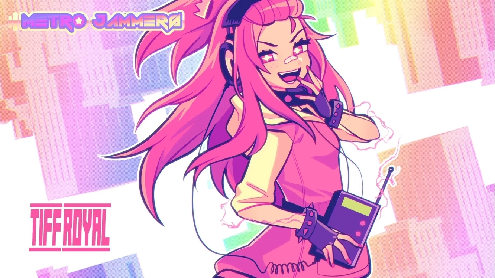
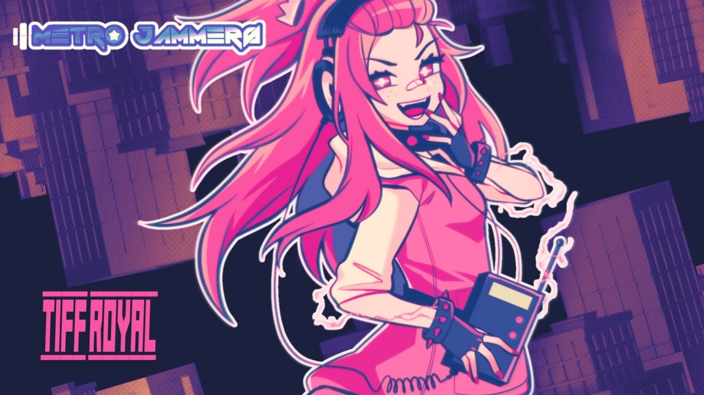
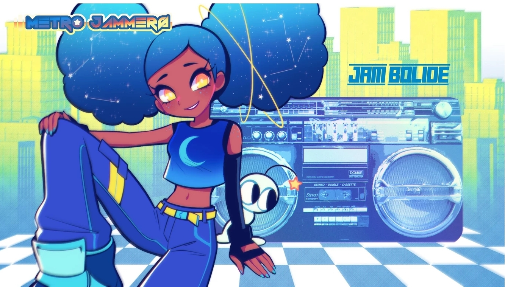
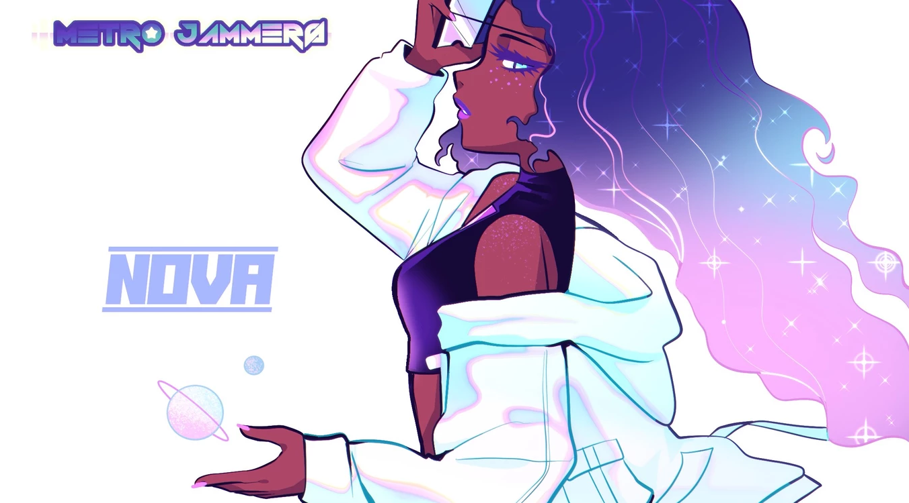
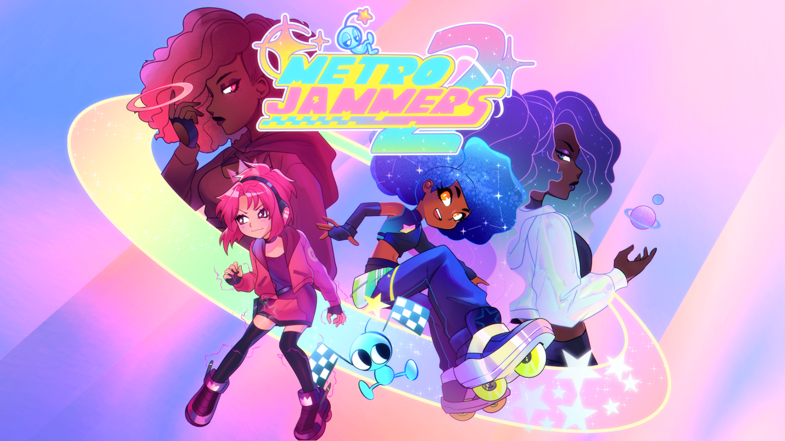
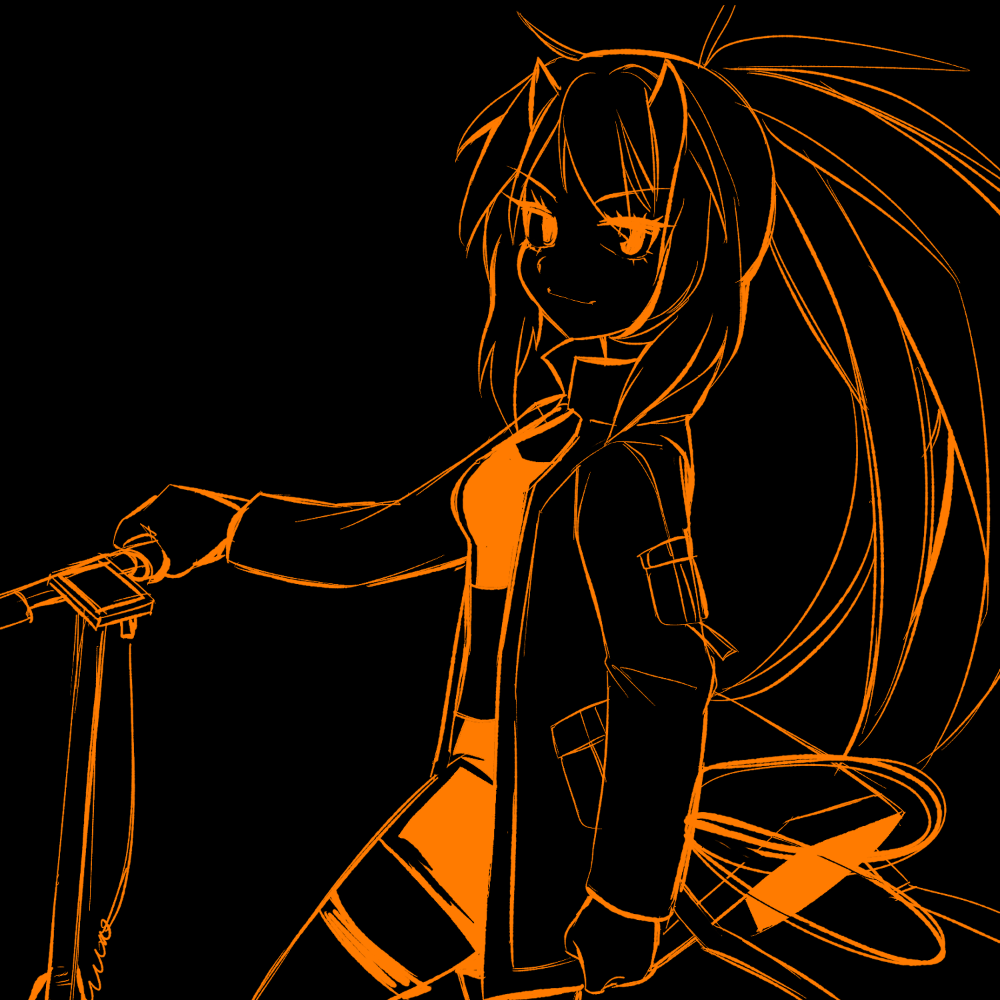

METRO JAMMERS 2019-2020 (Created by Memodemo)
Between 2019 to 2021 I worked with one of my great friends, Memodemo to do art for his music album. He's great at what he does and I really think your life with exponentially improve if you checked him out! Bandcamp
Metro Jammers (First Album) 2019






Metro Jammers 2 (Second Album) 2021


E-nomaly (Seperate from the Metro Jammers universe but had a crossover single)
